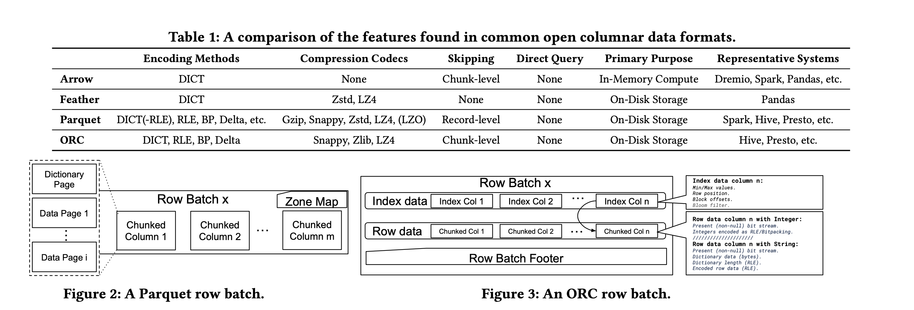

A Deep Dive into Common Open Formats for Analytical DBMSs
Table of Contents
https://www.vldb.org/pvldb/vol16/p3044-liu.pdf
对比了arrow/parquet/orc在分析数据库场景上面的优劣。论文里面使用的是每个格式开源版本提供的API，可以预见其实许多优化可能是没有进入到开源版本的，所以数据上稍微看看就好。看完后感觉这类横向对比不同组件的文章没太大的意思。
1. encoding
常见的encoding方式有：
- BP(bit-packed) 压缩相同宽度的数值比较适合。
- DICT(dictionary encoding) 字典编码，字典编码后的数值可以用其他编码方式。
- RLE(run-length encoding) 压缩许多连续重复出现的数字。
- DELTA(delta encoding) 论文最后面提到这种差值编码方式，虽然parquet/orc都有但是实际很少使用到。
感觉在现实场景中，几乎很少使用到随机访问这种访问模式，比如BP/DELTA这种编码方式随机访问起来开销也比较大，RLE会稍微好点。
2. format

arrow/orc需要将一批数据完全载入上来，但是parquet可以使用streaming read方式来解析数据，但是parquet API没有提供具体的内存表示格式。
In terms of data access, both Arrow and ORC require data to be fully loaded into dedicated in-memory data structures (an Arrow Table or ORC ColumnVectorBatch, respectively) before further query execution can begin. On the other hand, Parquet exposes a streaming API that allows pipelining data parsing and query execu- tion, leading to more optimization opportunities. However, Parquet does not itself provide any dedicated in-memory data structures
3. experiment
测试参数和数据如下
Setup. All experiments are performed on an Azure Standard D8s v3 (8 vCPUs, 32 GiB memory), premium SSD LRS, and Ubuntu 18.04. We test Apache Arrow 5.0.0, ORC 1.7.2, and the Apache Parquet Java API version 1.9.0. Where needed, we use the Apache Arrow C++ library to write in-memory Arrow tables to disk. We perform exper- iments using (i) the TPC-DS dataset at scale 10, (ii) the Join Order Benchmark (JOB) [1], (iii) the Public BI Benchmark (BI) [2], and (iv) real-world datasets drawn from public data sources including GIS, machine learning, and financial datasets (CodecDB) [33]. For all the experiments, we report numbers when the system caches are cold by default. For selected experiments we also report numbers when caches have been warmed up, i.e., to simulate frequently accessed datasets. Unless stated otherwise, we use each format’s default settings. Different results could certainly be obtained if dataset- specific parameter tuning were applied to each format. However, such fine-grained configuration tuning is beyond the scope of the paper and left as future work.
实验细节挺多
- zstd level1 压缩率就不错，继续到5~9并不好多少，相反CPU开销更大了。
- lz4 在orc上效果不太好，但是我觉得论文里面的解释有点牵强。